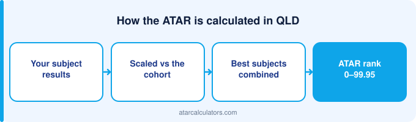

QLD ATAR cutoffs vary widely by course. Competitive degrees like medicine and law at the University of Queensland and QUT need an ATAR of 95 or above. Many arts, business and science courses sit between 65 and 80. A cutoff is the ATAR of the last student who got an offer last year, so it moves with demand.
Key takeaways
- Cutoffs vary by course, from the 60s to 99+.
- Medicine and law at top Queensland universities usually need 95+.
- Many arts, business and science courses sit between 65 and 80.
- A cutoff is the ATAR of the last student who got an offer, not a fixed pass mark.
- Cutoffs move each year with demand, so aim above the published figure.
- Adjustment factors can lower the ATAR you actually need.

What a QLD ATAR cutoff really means
A Queensland cutoff is the rank of the last student admitted, not a standard fixed in advance. QTAC publishes it after each round.
The range across Queensland courses
Queensland cutoffs range widely by course. The same degree at two Brisbane universities can differ, and neither number measures quality.
Competitive Queensland courses
The highest cutoffs go to courses like medicine, law, and some commerce and engineering degrees at the University of Queensland, QUT and Griffith. Direct-entry medicine usually needs 95 and above, plus an admissions test.
Law at leading Queensland universities is similar, often sitting in the high 90s. These courses have few places and many strong applicants, which keeps cutoffs high. See ATAR for medicine and ATAR for law.
Mid-range Queensland courses
Mid-range Queensland cutoffs cover most degrees, and they move most because applicant numbers shift there.
Why QLD cutoffs move each year
Queensland cutoffs move with demand. Note the state is still building history under the ATAR after the move from the OP — older comparisons use a scale that no longer exists.
Adjustment and bonus points
The ATAR you need is not always the raw cutoff. Many Queensland universities add adjustment factors, sometimes called bonus points, to your rank. These reward things like where you live, subjects you took, or difficulty during Year 12.
They lift your selection rank above your ATAR for that course. A student with an ATAR of 86 and five points is considered at 91. See how bonus points work.
Cutoff versus selection rank
Universities publish cutoffs as either an ATAR or a selection rank. A selection rank is your ATAR plus any adjustment points. So a course with a selection-rank cutoff of 90 might be reachable with an ATAR below 90, once your points are added.
Always check whether a cutoff is an ATAR or a selection rank. It changes how far your own ATAR needs to reach. Our selection rank calculator can help.
Check your QLD ATAR
Before you plan around cutoffs, get a sense of your own ATAR. Our QLD ATAR calculator estimates your ATAR from your subject results, using scaling.
Compare that estimate with the cutoff for your course, and you have a clear target for the rest of the year.
Cutoffs at the main QLD universities
Queensland universities publish through QTAC. Compare course structures, not just the numbers.
Guaranteed entry and early offers
Some Queensland universities publish guaranteed ranks. These are commitments rather than records of demand.
How to read a cutoff correctly
Read a Queensland cutoff as history. And check the year carefully — anything phrased as an OP predates the current system.
Selection rank explained with an example
Your selection rank is your ATAR plus adjustment factors. It is what QTAC compares to a cutoff.
Prerequisites matter as much as cutoffs
The cutoff is not the only requirement. Many Queensland courses require specific subjects as prerequisites. A course might list an 85 cutoff, but if it also requires a subject you did not take, the cutoff alone will not get you in.
So check the prerequisites for the courses you want, ideally before you choose your subjects. Meeting the prerequisite is as important as reaching the cutoff.
Pathways if you miss the cutoff
If a Queensland cutoff is out of reach, pathways exist. TAFE and diploma routes feed into Queensland universities.
Why the same course varies between years
Queensland cutoffs vary because demand does. A lower cutoff reflects fewer applicants competing.
Hedging with your preference list
Hedge your QTAC preferences. You can list several, and ambitious ordering costs nothing.
Cutoff versus your real chances
Your chances at a Queensland course depend on your selection rank, not your raw ATAR. Adjustment factors sit between them.
Reading a course entry page
When reading a Queensland table, check the year. The ATAR replaced the OP, so tables spanning the change are comparing different scales.
Common questions
What ATAR do I need for university in QLD?
It depends on the course. Many arts, business and science degrees sit between 65 and 80, while competitive courses like medicine and law at UQ and QUT usually need 95 or above.
What are the lowest-ATAR courses in QLD?
Many courses at Queensland universities accept students in the 60s, especially through pathway programs and with adjustment factors. Regional campuses often have lower cutoffs than metropolitan ones.
Do QLD unis give adjustment or bonus points?
Yes. Many Queensland universities add adjustment factors to your rank for things like your location, subjects, or difficulty faced during Year 12. These lift your selection rank above your ATAR for that course.
Is the cutoff the same as the average ATAR of students?
No. A cutoff is the ATAR of the last student who received an offer. The average ATAR of students in the course is usually higher, because many entered well above the cutoff.
Do Queensland universities offer guaranteed entry?
Yes. Several Queensland universities publish guaranteed-entry ATARs for some courses, so reaching the stated ATAR guarantees an offer. Many also run early-offer schemes before your ATAR is released.
Do I need specific subjects for QLD university courses?
Often, yes. Many Queensland courses require specific subjects as prerequisites. Meeting the prerequisite matters as much as reaching the cutoff, so check requirements before choosing your subjects.